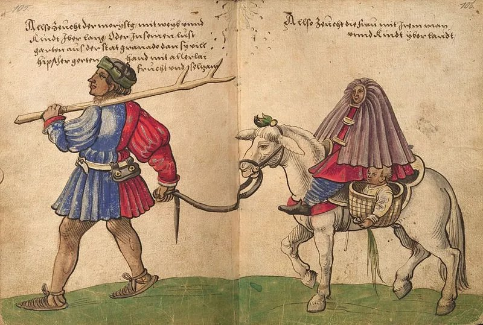
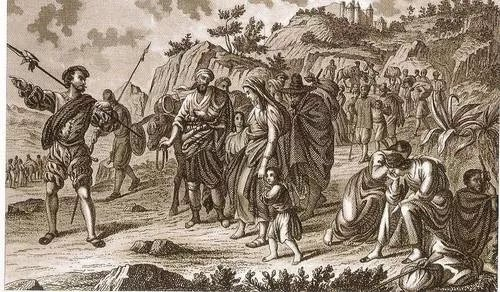

A Map To Spainish History
随着托莱多翻译院的助推，加上阿拉伯帝国的日渐消亡，基督徒收复伊比利亚半岛已是大势所趋。
1212年，在阿方索八世的领导下，卡斯蒂利亚王国的军队在拉斯纳瓦斯德托洛萨取得了战胜摩尔人的决定性胜利；此后，又收复了科尔多瓦、塞维利亚、赫雷斯、加的斯等城市，最后只剩下格拉纳达王国。1469年，伊莎贝拉一世嫁给了阿拉贡的王子费尔南多二世，卡斯蒂利亚和阿拉贡两个王国联姻，为两个王国的最后统一奠定了基础。1479年，费尔南多继位，成为阿拉贡国王，两国通过卡斯蒂利亚王位继承战争排除了葡萄牙的干预，正式合并为统一的西班牙王国，夫妇二人被称为“天主教双王”。
1492年，随着西班牙光复，伊比利亚半岛曾经的统治者摩尔人要被迫做出选择：坚持信仰伊斯兰教者需要自动离开西班牙。而只有皈依基督教，才能保留在西班牙的财产。于是一些格拉纳达的上层贵族和仅求保命的农民，选择在表面上归顺基督教。这些摩尔人被西班牙人称为摩里斯科人，意思是小摩尔人。
摩里斯科人只是在表面上皈依了基督教，但极其不情愿地履行着最低限度的宗教义务。对于下层民众而言，很多人除了双王的名字之外，基本上不怎么和卡斯蒂利亚人和阿拉贡人交流，语言上与基督徒邻居有巨大隔阂。他们在饮食上不吃猪肉，继续实行割礼。凡此种种都让基督徒感到隔阂和警惕。
在历经了互不信任的比邻生活后，社会矛盾在16世纪60年代彻底爆发。不断的对外胜利和殖民开扩，让西班牙有底气对待这些不同信仰的非我族类。包括废除面纱、阿拉伯语和古兰经，并逼他们学习圣经等等。1567年，作为加强同化的策略之一，西班牙国王菲利普二世下令拆除了有宗教和历史意义的阿尔布拉罕浴场。这一做法非常严酷，是对摩尔人的进一步强制同化政策。最后整个阿普加拉斯地区的摩里斯科人全部武装起来。他们拥戴科尔多瓦哈里发的后裔，赫尔南多-德-巴洛尔为国王，领导摩里斯科战争。
面对西班牙人的扫荡，摩尔人从1568年起大肆报复。他们亵渎教堂、攻击圣母像、杀死神父、对基督徒施加酷刑、将妇女儿童卖到北非为奴隶，还邀请巴巴里海盗和奥斯曼军队登陆。最先帅军平叛的蒙德哈尔侯爵。带领4000人进入战区，很大程度上压制了暴乱。但在朱比尔斯意外发生的大屠杀和在拉勒尔斯的背叛行为，让战火再度重燃。最后在唐-胡安的镇压下，这个以不宽恕为座右铭的年轻将领对摩里斯科人厉行镇压策略。
经历了一系列残酷的焦土政策和游击战后，西班牙陆军成功镇压了反抗。1609年，菲利普三世下达了最后的逐客令。西班牙人逼迫所有异教徒份子登上准备好的船只，集团送往北非。在接下来的一年里，又有巫术摩尔人离开了西班牙。他们告别了熟悉的定居和农耕生活，在短期内被北非同胞视为西班牙人，这一结局简直是里外不是人。历史悠久的摩尔社区彻底不复存在，剩下的个别人只能隐姓埋名、隐藏身份，被主流社会同化或者遗忘。这一过程造成了50万摩尔人流亡或者死亡。至此，伊比利亚半岛曾经的统治者彻底淡出了欧洲的历史舞台。
随着卡斯蒂利亚与阿拉贡统一了西班牙，卡斯蒂利亚方言逐渐成为了西班牙的通用语言，现代西班牙语即由卡斯蒂利亚方言发展而来。拉丁语则只局限于宗教、以及少数学术场合使用，在西班牙逐渐失去了活力。西班牙同统一后，经过数代语文学家的努力，卡斯蒂利亚语中闪米特语族的特征被逐渐剔除，西班牙本地化的表达逐渐填充进来，这意味着曾经给中世纪的欧洲大陆带来了文明之光的阿拉伯民族不但丧失了在欧洲的土地，也逐渐丧失了在欧洲文化中的阵地。
胡安娜，卡斯蒂利亚王国公主，“天主教双王”的女儿，生长于新兴的西班牙不断开疆扩土的时期，因此也就天然背负着政治使命。《疯女胡安娜》以胡安娜的政治婚姻为主线，讲述了16世纪的西班牙不断扩大政治影响的需求与胡安娜个人荣辱悲喜之间的冲突，其中涉及了欧洲诸国间的关系，不同民族间的冲突，生动地阐述了西班牙这段历史。由于Github文件大小限制，视频无法上传，因此附上该影片简介链接，内含短视频介绍：
《疯女胡安娜》电影简介